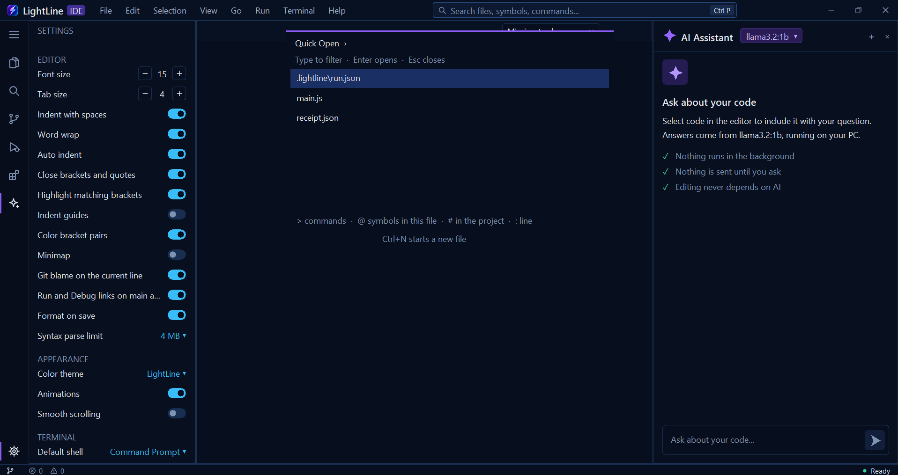

Today's Settings view and Quick Open beside a proposal at the same 125% scale. Quick Open stops floating in the middle of the editor: it drops straight down from the search box in the title bar, the box you click or reach with Ctrl P, and becomes the field you type in. Settings get grouped, searchable, and show which values you changed. Point at rows to see hover; the toolbar switches states.
Proposal1534 × 818 logical px at 125%, the size of the screenshot
LightLine IDE
FileEditSelectionViewGoRunTerminalHelp
Search files by nameCtrl P
JSmain.js
{ }receipt.json
{ }run.json.lightline
>Commands@Symbols#Workspace:LineEnter open Esc close
›Run Active FileCtrlShiftR
›Run Rust tests
›Run Python File
›Run C/C++ File
›Stop Running Program
›Run: Configure / Select Saved Configuration
›Run: Choose the File's Language
>Commands@Symbols#Workspace:LineEnter run Esc close
SETTINGS
Search settings
EDITOR
Font size−15+
Tab size−4+
Indent with spaces
Word wrap
Wrap long lines at the edge of the editor instead of scrolling sideways. Alt Z toggles it. Changed from the default (off). wordWrap
Auto indent
Close brackets and quotes
VISUAL AIDS
Highlight matching brackets
Color bracket pairs
Indent guides
Minimap
Git blame on the current line
Run and Debug links
FILES
Format on save
Syntax colors up to4 MB
APPEARANCE
Color themeLightLine
Animations
Smooth scrolling
TERMINAL
Default shellCommand Prompt
MARKDOWN
Load web images in previews
AI ASSISTANT
ServerOllama
Modelllama3.2:1b
Open settings.jsonfor everything else
EDITOR
Close brackets and quotes
VISUAL AIDS
Highlight matching brackets
Color bracket pairs
Open settings.jsonfor everything else
JSmain.js
main.js
1// Totals a receipt and prints it.
2const receipt = require('./receipt.json');
3
4functiontotal(items) {
5return items.reduce((sum, item) => sum + item.price * item.qty, 0);
Select code in the editor to include it with your question. Answers come from llama3.2:1b, running on your PC.
Ask about your code…
⊗ 0△ 0Ready
Todayv0.11.0, 1917 × 1015 screenshot

What changes
Quick Open
Centred, and it drops from the title-bar box. The search box in the title bar is centred on the window. It narrows rather than leave the centre when the menus are in the way. Opening Quick Open widens it to the list's full 520 px, and it turns blue and becomes the input, joined to the list below (the menu titles it covers come back when it closes). Ctrl P, Ctrl Shift P, Ctrl G and the menu all open it there.
A clear edge. Today it's filled with the editor's own colour and has no border, so it blends into the page and the Welcome text shows under it. The proposal has a blue border joined to the input, a slightly lighter fill and a drop shadow.
Sized to what it lists. Today it's always 342 px tall, so three files leave a large empty gap before the hint line. The proposal grows with its rows (up to 8) and puts the hints in a footer right under them.
Rows read faster. 26 px rows with a file-type badge, the file name first and its folder dimmed after it (run.json .lightline), and the typed letters highlighted.
Commands show their keys. Shortcuts already in the names, like “Run Active File (Ctrl+Shift+R)”, move to keycaps on the right, so names line up and stay short.
The modes are clickable. The footer's > @ # : become small buttons that switch mode; the current one is lit, and clicking it again goes back to files. Enter and Esc hints sit on the right.
The title still names special pickers (“Language of this file”, “Saved versions of main.js”); it moves into the input as its placeholder.
Settings
Search settings. A field under the title filters the rows as you type, highlights the match and shows the count. With 21 rows this is an in-memory filter, no index.
Smaller groups. “Editor” is split into Editor (typing), Visual aids (what's drawn) and Files (saving, parsing), so the first group isn't 14 rows long.
You can see what you changed. A violet bar marks every value that differs from the default; hovering shows a reset arrow. In your screenshot that's Word wrap, Indent guides, Format on save and Default shell.
Controls that look like controls. Choices become small drop-down boxes of one width, instead of blue text with a ▾. The − 15 + stepper becomes one joined control. Switches are smaller, and an off switch has an outline, so it isn't a grey blob.
Hover explains the row. A tip under the row says what it does and gives its settings.json key. It uses the existing tip code (tip_layout), like the Welcome page.
No more cut-off labels. “Run and Debug links on main a…” becomes “Run and Debug links” (the tip says where), and “Syntax parse limit” becomes “Syntax colors up to”. The AI server shows its provider's name (Ollama) instead of the raw address.
settings.json moves to the header as a { } button and stays as a link row at the end, instead of a full-width button.
Cost and rules
Concern
Plan
Paint
The dropdown is smaller than today's box for short lists, and its invalidated rect is just the box under the title bar. Rows stay capped at 8. A highlighted match draws one name in up to 3 runs; 8 rows at most.
Shadow
GDI has no blur. It's drawn as two 1 px darker bands below and to the right, with no alpha.
Icons
File badges are drawn shapes plus 2 letters in the UI font, with no new glyphs. Keycaps reuse rounded_fill.
Narrow window
The command center stays centred down to 260 px; narrower than that, it centres between the menus and the window buttons as before. The list is 520 px, or the window less 32 px.
Settings search
It filters the static ROWS list on each key and repaints only the side panel. No timer, no worker.
Defaults
The “changed” bar compares with Settings::default(), built once.
Unchanged
Every setting, every Quick Open mode, the AI and editor panes, the keyboard behaviour (↑ ↓ PgUp PgDn Enter Esc).